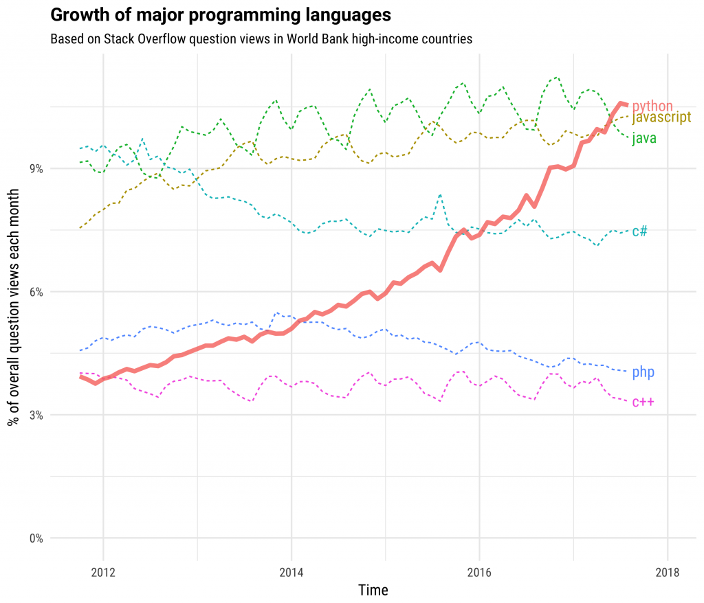
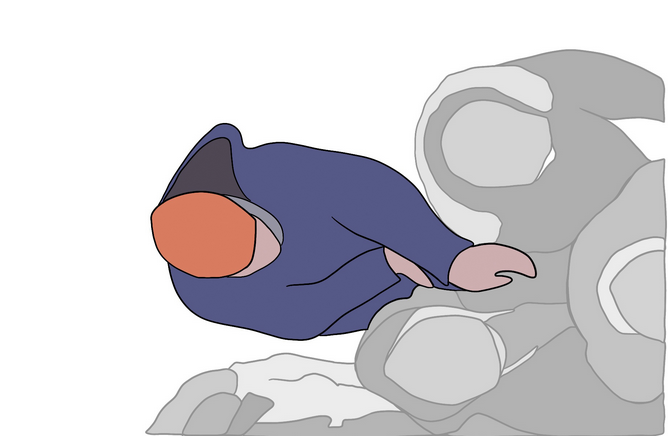
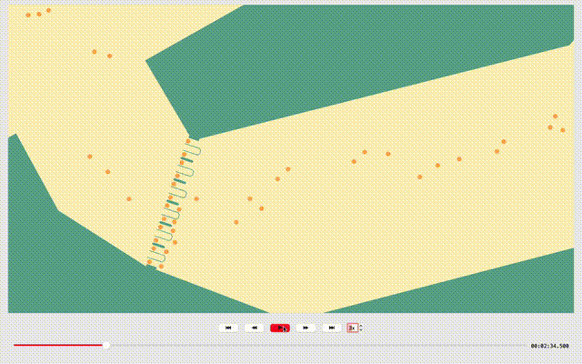

Docs
JuPedSim
JuPedSim#
JuPedSim has come a long way since its inception in 2010. Originally designed to simulate and analyze pedestrian dynamics across different scenarios, it stood as a testament to the evolving needs and challenges of the field. As it grew with every project, every Master’s, and PhD thesis, the software began to show its age - becoming cumbersome for prototyping. In response to these complex challenges, an extensive remodeling effort was undertaken to completely reconstruct JuPedSim. The outcome of this endeavor is a redesigned and improved version of the software that is more efficient and user-friendly. This article provides a brief glimpse into the process of transformation.
Balancing performance and Complexity with C++#
Central to the new JuPedSim is its architecture. Revising the architectural choices, we’ve transitioned from a singular focus on performance to a more balanced perspective. Instead of multithreading, JuPedSim now operates single-threaded, relegating only performance-critical segments to C++. This decision stems from recognizing that excessive complexity can deter users. While we acknowledge there’s room for further enhancements, especially regarding the integration of new models, the primary aim of this release was not solely performance but to strike a harmony between speed and user-friendliness.
Core functionalities of JuPedSim have been implemented as essential components in C++. This includes operative models describing pedestrian movement, as well as routing and navigation algorithms. While individually fundamental, when assembled, these components, much like Lego pieces, can be orchestrated to construct comprehensive, intricate systems, fostering the creation of meaningful and large-scale simulations and analyses in pedestrian dynamics.
Empowering with Python-API#
The previous version of JuPedSim operated primarily through the command-line interface and required navigating complex XML configurations, which could be quite intricate for users. However, as time passed and users adapted to the tool, a trend emerged towards automatic configuration generation using Python. Bridging the gap between core functionality and user interaction, JuPedSim introduces a lightweight and expressive Python API. This interface allows users to easily craft simulation scenarios, prototype complex behaviors, and harness the power of the core “primitive” components. The enhanced version of JuPedSim adopts a novel approach by operating as a library based on Python. This new architecture greatly enhances the versatility in configuring simulations. For instance, one can easily define dynamically changing behaviors such as arranging pedestrians in spiral formations and having individuals depart from the formation every 3 seconds. This Python API provides users with a familiar and intuitive programming language, enabling them to efficiently manipulate and analyze data, customize simulation parameters, and visualize results.
This transition not only aligns with changing user practices but also takes advantage of the widespread familiarity with Python, making JuPedSim more accessible and engaging for users. These scenarios can now be effortlessly communicated using Python scripting while allowing JuPedSim to focus on agent positioning and actions. Unlike its previous iteration, which constrained users to predefined configurations, this updated version offers substantial creative freedom in simulation design. Moreover, with this API, the JuPedSIm offers other software, like SUMO, the possibility to integrate and communicate seamlessly, expanding the software’s capabilities and versatility.


Source: Stackoverflow Blog#
Driving Research Forward#
The significant advantage of the new JuPedSim lies in its potential for academic research. Previously, researchers had to deal with the complexities of implementing low-level details. However, now they can easily conceptualize, prototype, and evaluate new theories in pedestrian dynamics. The capability to adjust agent behaviors, direct their movements, or alter their states in real-time allows for rapid iterations and thorough experimentation. This level of flexibility is unparalleled and offers numerous opportunities for comprehending pedestrian dynamics in complex environments.


Source: Pinar Usten#
To give an example, in this study, motivation among agents is represented by the parameter \(T\). Higher motivation, like in jostling situations, correlates with a smaller \(T\) value, causing pedestrians to quickly close gaps. For example, highly motivated agents might have \(T=0.1s\), while less motivated ones might sit at \(T=1.3s\). But what if the motivation of people varies with time and space? Consider an exit scenario: those closer to an exit in a crowd are more motivated than those far behind, indicating a need for \(T\) to be dynamic.
This is where the new JuPedSim shines — it can adjust this “motivation behavior” in real-time during a simulation, providing a nuanced, adaptive, and accurate depiction of pedestrian behaviors as they shift and evolve.
JuPedSim’s Application-Driven History: About Evacuations and Major Events#
The advancement of JuPedSim was driven by the findings of numerous application-related national research projects with partners such as the fire department, police, transport companies, security services, event organizers and venue operators.
We started with the project Hermes and designed JuPedSim in a way that it could be utilized to simulate the evacuation of a stadium in Düsseldorf. Within the project ORPHEUS we investigated a large-scale evacuation scenario of an underground station in Berlin. As a part of the project KapaKrit different crowd management measures were investigated with JuPedSim to determine the capacity of a train station for a large-scale evacuation of the city Dortmund.
In recent years the investigation of arrival and departure processes at major events has increasingly come into focus. Empirical findings from the projects BaSiGo and CroMa) regarding crowd management measures and waiting behavior have created an improved data basis for enhancing our software and the models accordingly. In doing so, we continuously take into account practical challenges and issues. Since 2019, we have been working closely with people responsible for event safety (such as event planners and authorities) as part of the SISAME/SISAME 2.0 project. In interdisciplinary workshops, we have worked out how simulations can help in planning events and have accordingly advanced the development of JuPedSim. Another goal of SISAME is the coupling with SUMO, a simulation software for modelling urban traffic (private and public transport). One of our main goals is to enable, together with SUMO, a holistic simulation that combines a wide variety of transport modes and pedestrian streams. In the current project CroMa-PRO, JuPedSim is being improved for the use in event planning. In this context, the modeling of waiting behavior will be improved and the routing should be made more flexible in order to be able to reflect crowd management measures. JuPedSim will be tested for a wide variety of arrival and departure scenarios for the 2024 UEFA European Football Championship in Düsseldorf.
With the new release of JuPedSim we have bundled our experiences from the last decades and provide a powerful simulation tool, that can be used for investigating different aspects of crowd dynamics ranging from large-scale evacuation scenarios to crowd-management measures such as waiting in queues. See for yourself:


Agents approach gates and decide for the least targeted one.#